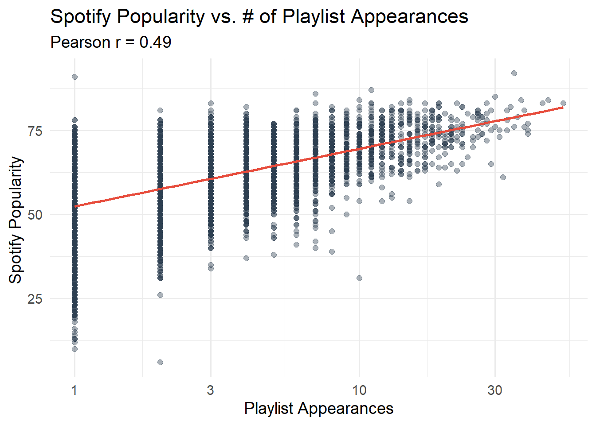

In this project, we harness Spotify’s rich dataset to answer a simple but compelling question: what makes a song not just good, but universally loved? By tapping into two distinct data exports, one detailing track popularity metrics and another cataloguing song attributes (tempo, key, danceability, and energy)—we can move beyond subjective taste and build an evidence‑backed “ultimate playlist.”
This project is also insipired by the “All Rise” playlist, by Mr Barney Stinson, as the Ultimate Playtlist helps define a great aggregation of music into a single playlist based on what we love to hear most.
Below, we will begin with the two datasets that will be used from this project.
Data
Code
load_songs <-function() {library(readr) dir_path <-"data/mp03" file_name <-"songs.csv" file_path <-file.path(dir_path, file_name)#checking dupolicate so that github will not block itif (!dir.exists(dir_path)) {dir.create(dir_path, recursive =TRUE) }# downloadif (!file.exists(file_path)) {download.file("https://raw.githubusercontent.com/gabminamedez/spotify-data/refs/heads/master/data.csv",destfile = file_path,mode ="wb" ) }# reading in dataset file_path |>read_csv(show_col_types =FALSE)}songs_df <-load_songs()head(songs_df)
Thanks to the github user, gabminamedez, we have a master file of a catalogue of songs that contains their respective propertiers such as name, release_date, dancebility, energy and much more that will be integral for our analysis.
Warning in download.file(file_url, file_path, mode = "wb", quiet = TRUE):
cannot open URL
'https://raw.githubusercontent.com/DevinOgrady/spotify_million_playlist_dataset/main/data1/mpd.slice.2000-2999.json':
HTTP status was '404 Not Found'
Failed to download mpd.slice.2000-2999.json
Downloading: mpd.slice.4000-4999.json
Warning in download.file(file_url, file_path, mode = "wb", quiet = TRUE):
cannot open URL
'https://raw.githubusercontent.com/DevinOgrady/spotify_million_playlist_dataset/main/data1/mpd.slice.4000-4999.json':
HTTP status was '404 Not Found'
Failed to download mpd.slice.4000-4999.json
Downloading: mpd.slice.5000-5999.json
Warning in download.file(file_url, file_path, mode = "wb", quiet = TRUE):
cannot open URL
'https://raw.githubusercontent.com/DevinOgrady/spotify_million_playlist_dataset/main/data1/mpd.slice.5000-5999.json':
HTTP status was '404 Not Found'
Failed to download mpd.slice.5000-5999.json
Downloading: mpd.slice.6000-6999.json
Warning in download.file(file_url, file_path, mode = "wb", quiet = TRUE):
cannot open URL
'https://raw.githubusercontent.com/DevinOgrady/spotify_million_playlist_dataset/main/data1/mpd.slice.6000-6999.json':
HTTP status was '404 Not Found'
Failed to download mpd.slice.6000-6999.json
Downloading: mpd.slice.8000-8999.json
Warning in download.file(file_url, file_path, mode = "wb", quiet = TRUE):
cannot open URL
'https://raw.githubusercontent.com/DevinOgrady/spotify_million_playlist_dataset/main/data1/mpd.slice.8000-8999.json':
HTTP status was '404 Not Found'
Failed to download mpd.slice.8000-8999.json
Downloading: mpd.slice.9000-9999.json
Warning in download.file(file_url, file_path, mode = "wb", quiet = TRUE):
cannot open URL
'https://raw.githubusercontent.com/DevinOgrady/spotify_million_playlist_dataset/main/data1/mpd.slice.9000-9999.json':
HTTP status was '404 Not Found'
Failed to download mpd.slice.9000-9999.json
Code
library(dplyr)library(tidyr)library(stringr)strip_spotify_prefix <-function(x) {str_extract(x, ".*:.*:(.*)", group =1)}playlist_df <- playlists[[1]] |># 1. Keep just the playlist info + the tracks columnmutate(playlist_name = name,playlist_id =strip_spotify_prefix(pid),playlist_followers = num_followers ) |>select(playlist_name, playlist_id, playlist_followers, tracks) |>unnest(tracks) |># These are more of the columns that were specifid we needed for this projectmutate(playlist_position =row_number(), artist_name = artist_name, artist_id =strip_spotify_prefix(artist_uri),track_name = track_name,track_id =strip_spotify_prefix(track_uri),album_name = album_name,album_id =strip_spotify_prefix(album_uri),duration = duration_ms ) |>select( playlist_name, playlist_id, playlist_position, playlist_followers, artist_name, artist_id, track_name, track_id, album_name, album_id, duration )# Look at the first few rowshead(playlist_df)
How many distinct tracks and artists are represented in the playlist data?
Code
library(dplyr)library(knitr)playlist_df |>summarise(`Distinct Tracks`=n_distinct(track_id),`Distinct Artists`=n_distinct(artist_id) ) |>kable(caption ="Unique Number of Artisits & Tracks",align ="c" )
Unique Number of Artisits & Tracks
Distinct Tracks
Distinct Artists
34443
9754
The playlist dataset contains 34,443 distinct tracks and 9,754 distinct artists. Quite a large range!
What are the 5 most popular tracks in the playlist data?
Code
playlist_df |>count( track_name, artist_name, album_name,name ="Appearances" ) |>arrange(desc(Appearances)) |>head() |>rename(`Track Name`= track_name,`Artist Name`= artist_name,`Album Name`= album_name,`Number of Playlist Appearances`= Appearances ) |>kable(caption ="Most Popular Tracks in Playlist Dataset",align ="c" )
Most Popular Tracks in Playlist Dataset
Track Name
Artist Name
Album Name
Number of Playlist Appearances
One Dance
Drake
Views
55
HUMBLE.
Kendrick Lamar
DAMN.
52
Broccoli (feat. Lil Yachty)
DRAM
Big Baby DRAM
50
Closer
The Chainsmokers
Closer
46
Congratulations
Post Malone
Stoney
44
Don’t Let Me Down
The Chainsmokers
The Chainsmokers- Japan Special Edition
42
In the table above, we display the top songs in the playlist dataset. “One Dance” by Drake, takes top spot as it appears in 55 different playlists.
What is the most popular track in the playlist data that does not have a corresponding entry in the song characteristics data?
Code
playlist_df |>anti_join(songs_df, by =c("track_id"="id")) |>count( track_name, artist_name, album_name,name ="Appearances" ) |>arrange(desc(Appearances)) |>slice_head(n =1) |>rename( `Track Name`= track_name,`Artist Name`= artist_name,`Album Name`= album_name,`Number of Playlist Appearances`= Appearances ) |>kable(caption ="The Most Popular Track that is not in both Datasets",align ="c" )
The Most Popular Track that is not in both Datasets
Track Name
Artist Name
Album Name
Number of Playlist Appearances
One Dance
Drake
Views
55
The song “One Dance” by Drake, does not appear in the songs characteristics data “songs_df”.
According to the song characteristics data, what is the most “danceable” track? How often does it appear in a playlist?
The most popular playlist on Spotify is “Tangled”, with 1038 followers.
Task 5: Visually Identifying Characteristics of Popular Songs
Inner-joiing both the song characteristics & playlist information datasets. Dataframe will be called inner_joined_data.
Code
inner_joined_data <- songs_df |># rename the song‐data 'id' column so it matchesrename(track_id = id) |># now do the join by track_idinner_join(playlist_df, by ="track_id")head(inner_joined_data)
Is the popularity column correlated with the number of playlist appearances? If so, to what degree?
Code
library(ggplot2)track_stats <- inner_joined_data |>count(track_id, popularity, name ="play_count")#Pearson correlation between play count and popularitycorr_coef <-cor(track_stats$play_count, track_stats$popularity)print(paste("Pearson correlation:", round(corr_coef, 3)))
[1] "Pearson correlation: 0.488"
Code
#Scatterplottrack_stats |>ggplot(aes(x = play_count, y = popularity)) +geom_point(alpha =0.4, size =2, color ="#2C3E50") +geom_smooth(method ="lm", color ="#E74C3C", se =FALSE) +scale_x_log10() +labs(title ="Spotify Popularity vs. # of Playlist Appearances",subtitle =paste0("Pearson r = ", round(corr_coef, 2)),x ="Playlist Appearances",y ="Spotify Popularity " ) +theme_minimal(base_size =14)
`geom_smooth()` using formula = 'y ~ x'

Code
pop_cutoff <-70
We conducted a Pearson correlation analysis to examine whether a song’s popularity score is related to its playlist position. The resulting correlation coefficient of 0.49 indicates a moderate positive relationship: in general, more‑popular songs tend to appear earlier in playlists. However, the correlation is far from perfect, so highly popular tracks can still show up infrequently—or later—on certain playlists.
In what year were the most popular songs released?